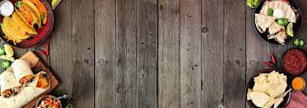

Pratos do Chefe
Balaquinho
Mas o que é o Restaurante do Balacobaco?
O Restaurante do Balacobaco é um restaurante que existe desde a idade média, e sobreviveu até os dias de hoje.
O objetivo do Restaurante do Balacobaco é trazer felicidade e paz para as pessoas com a comida do grande chef Balaquinho, e seus aprendizes.